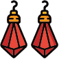
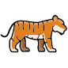

Historial de sorteos
Consulta resultados por fecha, horario y país. Los sorteos del día se destacan automáticamente.
Confirma/Refuta hipótesis pendientes según los resultados válidos de la fecha seleccionada.
Consulta resultados por fecha, horario y país. Los sorteos del día se destacan automáticamente.
Mis 6 números recomendados para hoy.
Este módulo opera con su propio motor estadístico y base histórica. Los datos aquí no afectan La Diaria.
Cada vez que guardes un sorteo, el turno avanzará automáticamente (11AM → 3PM → 9PM).
Posición inicial
Posición central
Posición final
Usa tus tres pares como base y deja que el sistema combine conversiones simples, ajustes y compuestas.
Ingresa los tres pares para desbloquear una propuesta.
La tabla Pega3 se mantiene separada; puedes registrar históricos sin afectar La Diaria.
Registra sorteos para comenzar el análisis.
Registra sorteos para comenzar.
Las afirmaciones —propias o ajenas— se tratan como hipótesis, no como verdades. El sistema las contrasta con los datos reales usando chi-cuadrado y entropía de Shannon. Un veredicto Sin efecto no significa que la afirmación sea falsa: puede haber muestra insuficiente.
Cargando análisis…
Chi-cuadrado de uniformidad para cada mes. Verde = distribución normal. Naranja/rojo = mes con comportamiento atípico estadísticamente.
Cargando…
Entropía de Shannon en ventanas de 30 sorteos, promediada por mes. Valor alto = más impredecible (caótico). Valor bajo = más predecible (patterned). La línea naranja es el promedio global.
Cargando…
Selecciona un mes y observa qué números aparecieron en ese mismo mes en cada año registrado. Los marcados en verde han aparecido en ≥2 años distintos.
Selecciona un mes.
Marca los miércoles y sábados donde La Diaria pagó un super premio. El motor de señales ajustará automáticamente los pesos cuando estés en periodo de recuperación.
Registra la relación entre dos números que tienden a aparecer juntos. Úsalo como herramienta de notas para anotar vínculos simbólicos o históricos que quieras recordar.
Grupos de números que tienden a aparecer todos dentro de una ventana de días. Cuando uno cae, el sistema rastrea cuáles siguen pendientes.
Genera tu jugada en dos pasos: primero la línea (decena), luego el número. Cada resultado es completamente aleatorio e independiente.
Explora el número base, sus inversiones y conversiones simples/compuestas con los símbolos de la guía. Útil para detectar radios alrededor de un número favorito.
Ingresá un número y el sistema te muestra cada vez que cayó, qué lo antecedió y qué vino después — para que puedas detectar patrones reales.
Combina los sorteos reales para proyectar candidatos del turno de las 9 PM.
Explora el mapa holográfico 00–99. Cada clic abre el expediente del número con sus apariciones, conversiones y tiempos de espera.
Intensidad = actividad directa. Haz clic para abrir el detalle.
Cargando historial…
Selecciona un número para ver su bitácora, transformaciones y saltar al día exacto.
Calcula cada cuánto reaparece cada número y resalta los que están por entrar en ventana.
Procesando huecos…
Explora todos los números (00–99), sus símbolos, familias y polaridades.
Los espacios vacíos están reservados para las imágenes futuras de cada símbolo.
Para cada número se muestran los que históricamente tienden a seguirlo. Haz clic en cualquier número para ver su ficha en la guía.
Separa los números según la familia simbólica para analizarlos en bloque.
Aquí puedes ver todos los usuarios registrados y cambiar su rol. Para invitar a alguien nuevo: entra al dashboard de Supabase → Authentication → Users → Invite user. Luego asígnale el rol aquí.
Cargando usuarios…
Muestra hasta qué fecha hay sorteos registrados por cada año. Útil para saber qué períodos faltan completar.
Cargando cobertura...
Ajusta sorteos que quedaron registrados con un día adelantado por el desfase UTC. Solo modifica los que estén como máximo un día en el futuro respecto a su fecha de captura.
Filtra por fecha o escribe parte del país, horario, número o símbolo para ubicar sorteos más rápido.
Inserta los 839 sorteos de 2014 (sorteo #7025 al #7863). Los duplicados se saltan automáticamente. La 2PM histórica queda registrada como 3PM.
Simula que el motor se corrió cada día desde el warmup, usando solo los datos disponibles hasta ese momento. Mide cuántas veces el número que cayó al día siguiente estaba en el top-K y compara contra la baseline aleatoria (K/100). Si lift > 1.0, el motor es mejor que el azar; si lift ≈ 1.0, no hay ventaja real.
Historial completo de sorteos Pega3 registrados, agrupados por año.
Haz clic en "Cargar" para ver el historial.
Usa con precaución: eliminará todos los sorteos, hipótesis y reglas.


Ingresa tu estrategia y ve exactamente cuánto ganas o pierdes en cada escenario.
Selecciona un tema del menú.
Corrige o elimina sorteos antes de sincronizarlos con Supabase. Los cambios solo afectan la cola local.
| Fecha | País | Horario | Número | Símbolo | Tipo | Acciones |
|---|